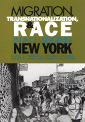

<body bgcolor="#FFFFFF" text="#000000" link="#0000FF" vlink="#CC0000" alink="#CC0000"><center><hr width="350" size="1" align="center" noshade>An examination of the complex forces that shape the contemporary immigration experience in New York City<hr width="350" size="1" align="center" noshade><p><a href="https://cdcshoppingcart.uchicago.edu/Cart/ChicagoBook.aspx?ISBN=9781566398879&&PRESS=temple" target="_top">Buy this book!</a> | <a href="https://cdcshoppingcart.uchicago.edu/Cart/Cart.aspx?PRESS=temple" target="_top">View Cart</a> | <a href="https://cdcshoppingcart.uchicago.edu/Cart/Cart.aspx?PRESS=temple" target="_top">Check Out</a></p><p></p></center><!--none//--><h1>Migration, Transnationalization, and Race in a Changing New York</h1>
<h3>edited by Héctor R. Cordero-Guzmán, Robert C. Smith and Ramón Grosfoguel</h3>
<P>cloth 1-56639-887-8 $90.50, Aug 01, <FONT COLOR=#990033>Available</FONT>
<br>paper 1-56639-888-6 $32.95, Aug 01, <FONT COLOR=#990033>Available</FONT>
<br>Electronic Book 1-4399-0112-0 $32.95 <FONT COLOR=#990033>Available</FONT>
<BR> 320 pp
7x10
20&nbsp;tables
</P><BLOCKQUOTE><I>"Innovative and illuminating, this book is exactly what we need at this time: an examination of specific instances which capture the features, the meaning and the implications of transnationalism. This volume is exciting because it includes a younger generation of researchers. One of the book's strengths is that it combines a focus on migration with a focus on the city. Through this detailed lens, [the editors] make a contribution to our understanding of larger cross-boarder dynamics."</I>
<br>&#151<b>Saskia Sassen</b>, Ralph Lewis Professor of Sociology, University of Chicago, and author of <I>The Global City 2001</I><I></I></BLOCKQUOTE>
<p>When you think of American immigration, what images come to mind? Ellis Island. East Side tenements. Pushcarts on Eighth Avenue. Little Italy. Chinatown. El Barrio. New York City has always been central to the immigrant experience in the United States. In the last three decades, the volume of immigration has increased as has the diversity of immigrant origins and experiences. Contemporary immigration conjures up old images but also some new ones: the sweatshops and ethnic neighborhoods are still there, but so are cell phones, faxes, e-mails, and the more intense and multilayered involvement of
immigrants in the social, economic, and political life of both home and host societies.
<p>In this ambitious book, nineteen scholars from a broad range of disciplines bring our understanding of New York's immigrant communities up to date by exploring the interaction between economic globalization and transnationalization, demographic change, and the evolving racial, ethnic, gender dynamics in the City. Urban and suburban, Asian, European, Latin American, and Caribbean, men and women and children&#151the essays here analyze the complex forces that shape the contemporary immigrant experience in New York City and the links between immigrant communities in New York and their countries of origin.
<BR>&nbsp;<h2>Excerpt</h2><P>Excerpt available at <a href="http://www.temple.edu/tempress">www.temple.edu/tempress</a></p>
<BR>&nbsp;<h2>Reviews</h2>
<p><I>"One hears a lot about transnationalism these days. But the word is used so loosely that it often loses any real meaning. This book puts some meat on the bones of transnationalism by showing how it unfolds among various immigrant groups in one particular city&#151New York&#151not only now, but in the past. It reveals both the fascinating diversity and remarkable similarity of transnationalism as it plays out across different groups and times."</I>
<br>&#151<b>Douglas S. Massey</b>, Dorothy Swaine Thomas Professor of Sociology, University of Pennsylvania
<p><I>"These sure-handed editors have produced a rich, varied, and sophisticated picture of how immigration is changing the face of America's gateway city, New York. Exploring a dozen immigrant groups, the leading scholars reveal how class, gender, transnational ties, discrimination, and political action are shaping the formation of new Americans in a renewed city."</I>
<br>&#151<b>John Mollenkopf</b>, Director, Center for Urban Research, CUNY Graduate Center, and co-author of <I>Place Matters: Metropolitics for the 21st Century</I>
<p><i>"This book provides a strong introduction to the transnational literature by presenting an interesting array of case studies of immigrant groups in New York City."</i>
<br>&#151<b><i><a href="http://www.findarticles.com/p/articles/mi_qa3668/is_200407/ai_n9455933" target="new">The International Migration Review</a></i></b>
<BR>&nbsp;<h2>Contents</h2><P>
<p>Introduction &#150 Robert C. Smith, Héctor R. Cordero-Guzmán, and Ramón Grosfoguel
<p><b>Part I: Transnationalization, Globalization and Migration</b>
<br>1. Transnationalism, Then and Now: New York Immigrants Today and at the Turn of
the Century &#150 Nancy Foner
<br>2. The Generation of Identity: Haitian Youth and the Transnational Nation-State &#150 Georges E. Fouron and Nina Glick Schiller
<br>3. Political Incorporation and Re-Incorporation: Simultaneity in the Dominican
Migrant Experience &#150 Pamela M. Graham
<br>4. Suburban Transmigrants: Long Island's Salvadorans &#150 Sarah Mahler
<br>5. The Rules of the Game and the Game of the Rules: The Political Dimension of
Recent Chinese Immigration to New York &#150 Zai Liang
<br>6. Gendered and Racialized Circulation-Migration: Implications for the Poverty
and Work Experience of New York's Puerto Rican Women &#150 Dennis Conway, Adrian J. Bailey, and Mark Ellis
<p><b>Part II: Migration and Socio-Economic Incorporation in New York City</b>
<br>7. Class, Race, and Success: Indian-Americans Confront the American Dream &#150 Johanna Lessinger
<br>8. Ethnic Niches and Racial Traps: Jamaicans in the New York Regional Economy &#150 Philip Kasinitz and Milton Vickerman
<br>9. Neither Ignorance nor Bliss: Race, Racism and the West Indian Immigrant
Experience &#150 Vilna Bashi
<br>10. Peruvian Historical Networks for Migration in New York City &#150 Alex Julca
<br>11. Entrepreneurship and Business Development among African-Americans, Koreans, and Jews: Exploring Some Structural Differences &#150 Jennifer Lee
<br>12. When Co-ethnic Assets Become Liabilities: Mexicans, Ecuadorian and Chinese
Garment Workers in New York City &#150 Margaret M. Chin
</P><BR>&nbsp;<H2>About the Author(s)</H2>
<P><b>Héctor R. Cordero-Guzmán</b> is an Assistant Professor at the Robert J. Milano Graduate School of Management and Urban Policy at the New School University in New York City.</P>
<P><b>Robert C. Smith</b> is an Assistant Professor in the Department of Sociology at Barnard College and part of the Barnard Project on Migration and Diasporas.</P>
<P><b>Ramón Grosfoguel</b> is a Professor in the Sociology Department at Boston College.</P>
<P>Contributors: Nancy Foner, Georges E. Fouron, Nina Glick Schiller, Pamela M. Graham, Sarah Mahler, Zai Liang, Dennis Conway, Adrian J. Bailey, Mark Ellis, Johanna Lessinger, Philip Kasinitz, Milton Vickerman, Vilna Bashi, Alex Julca, Jennifer Lee, Margaret M. Chin, and the editors.</P>
<BR><H2>Subject Categories</H2>
<p><A HREF="/tempress/sociology.html" TARGET="_top">Sociology</a>
<BR><A HREF="/tempress/urban.html" TARGET="_top">Urban Studies</a>
<BR><A HREF="/tempress/immigration.html" TARGET="_top">Immigration Studies</a>
</p>
<p align="center"><a href="https://cdcshoppingcart.uchicago.edu/Cart/ChicagoBook.aspx?ISBN=9781566398879&&PRESS=temple" target="_top">Buy this book!</a> | <a href="https://cdcshoppingcart.uchicago.edu/Cart/Cart.aspx?PRESS=temple" target="_top">View Cart</a> | <a href="https://cdcshoppingcart.uchicago.edu/Cart/Cart.aspx?PRESS=temple" target="_top">Check Out</a></p><p><font face="Arial" size="1"><a href="copyright.html" onMouseOver="window.status='Web Copyright Policy';return true;" onMouseOut="window.status=''" title="Web Copyright Policy">&copy;</a> 2015 <a href="http://www.temple.edu" target="new" onMouseOver="window.status='Link to Temple University home page';return true;" onMouseOut="window.status=''" title="Link to Temple University home page">Temple University</a>. All Rights Reserved. http://www.temple.edu/tempress/titles/1572_reg.html</font></p>